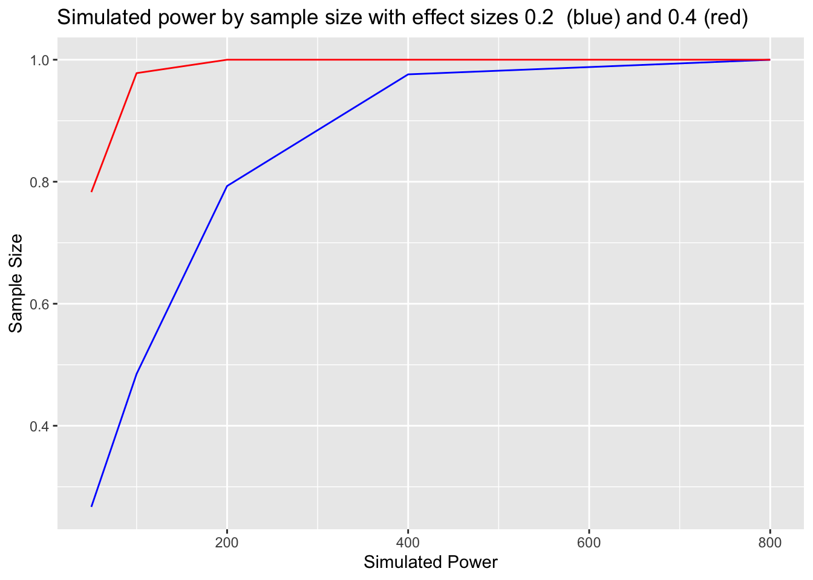
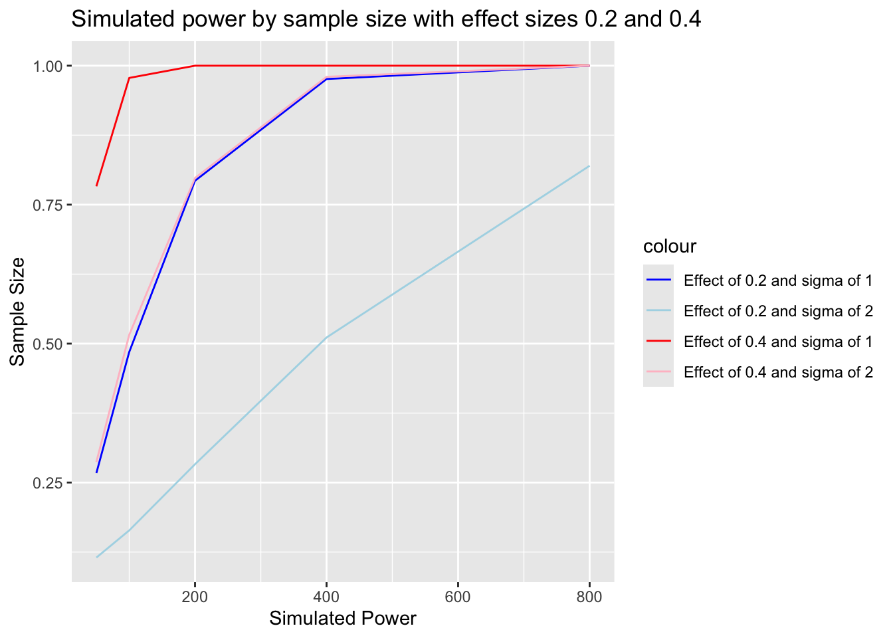
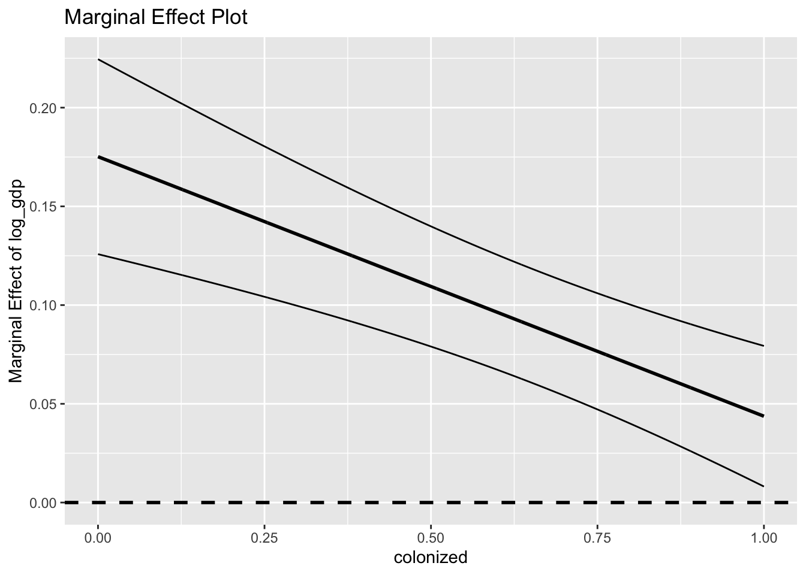
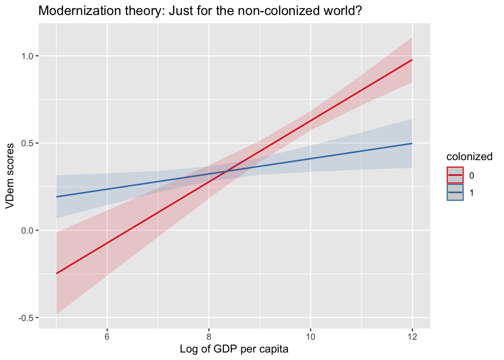

The following objects are masked from 'package:stats':
filter, lag
The following objects are masked from 'package:base':
intersect, setdiff, setequal, union
library(ggplot2)
Warning: package 'ggplot2' was built under R version 4.5.2
1 Problem 1
Define statistical power in your own words. Statistical power is the likelihood that, given a certain experimental setup, a certain acceptable alpha-level, and a certain actual effect size, the researcher will correctly reject the null hypothesis. That is, the experimental setup can correctly determine that the effect is statistically different from zero.
Explain the relationship between Type I error (\(\alpha\)), Type II error (\(\beta\)), and power. A Type I error is where we incorrectly believe that a relationship is real when it is not (we incorrectly reject the null hypothesis). A Type II error is where we incorrectly believe that a relationship is not real when it totally is (we incorrectly fail to reject the null hypothesis).
2 Problem 2
2.1 2a.
Simulate power for different scenarios:
# Complete this code to simulate power for different sample sizes# 1. Simulate n_sim datasets with given parameters# 2. For each dataset, run linear regression# 3. Calculate proportion of simulations where p < alpha# 4. Return power estimateset.seed(144)simulate_power <-function(true_effect, sample_size, sigma =1, alpha =0.05, n_sim =1000) { significant_count =0for (i in1:n_sim) { x =c(rnorm(n = sample_size)) y =c(true_effect*x +rnorm(n = sample_size, sd = sigma)) simulated_data =data.frame(x = x, y = y) simulated_model =lm(y ~ x, data = simulated_data) p_value_i =summary(simulated_model)$coefficients[2, 4]if (p_value_i < alpha) {significant_count = significant_count +1} } significant_count / n_sim}simulate_power(0.2, 100, sigma =1, alpha =0.05, n_sim =1000)
[1] 0.51
# Test for different sample sizessample_sizes <-c(50, 100, 200, 400, 800)true_effects <-c(0.2, 0.4)sigmas =c(1, 2)n_sim =1000
# Create a data frame with power estimates for each sample sizesimulated_power_sample_size =data.frame(sample_sizes) count =0powers_0.2=c()for (i in sample_sizes){ count = count +1 power =simulate_power(true_effect =0.2, sample_size = sample_sizes[count], sigma =1, alpha =0.05, n_sim =1000) powers_0.2=c(powers_0.2, power)}simulated_power_sample_size_0.2=data.frame(sample_sizes, powers_0.2)count =0powers_0.4=c()for (i in sample_sizes){ count = count +1 power =simulate_power(true_effect =0.4, sample_size = sample_sizes[count], sigma =1, alpha =0.05, n_sim =1000) powers_0.4=c(powers_0.4, power)}simulated_power_sample_size_0.4=data.frame(sample_sizes, powers_0.4)
# Create visualizationlibrary(ggplot2)# Plot power vs sample sizegraph_simulated_power_sample_size =ggplot() +geom_line(data = simulated_power_sample_size_0.2, aes(x = sample_sizes, y = powers_0.2), color ="blue") +geom_line(data = simulated_power_sample_size_0.4, aes(x = sample_sizes, y = powers_0.4), color ="red") +labs(x ="Simulated Power", y ="Sample Size", title ="Simulated power by sample size with effect sizes 0.2 (blue) and 0.4 (red)")graph_simulated_power_sample_size

(I do not go for creativity in labeling this graph).
Questions: 1. What sample size is needed to achieve 80% power for detecting an effect of 0.2?
You need at least 400 observations.
How does changing the true effect size to 0.4 affect the required sample size?
The required sample size goes way down, from 400 to 100; doubling the effect reduces the required sample size by a factor of four.
What happens to power if you double the variance (sigma)?
Let’s find out!
count =0powers_0.2_sigma2 =c()for (i in sample_sizes){ count = count +1 power =simulate_power(true_effect =0.2, sample_size = sample_sizes[count], sigma =2, alpha =0.05, n_sim =1000) powers_0.2_sigma2 =c(powers_0.2_sigma2, power)}simulated_power_sample_size_0.2_sigma2 =data.frame(sample_sizes, powers_0.2_sigma2)count =0powers_0.4_sigma2 =c()for (i in sample_sizes){ count = count +1 power =simulate_power(true_effect =0.4, sample_size = sample_sizes[count], sigma =2, alpha =0.05, n_sim =1000) powers_0.4_sigma2 =c(powers_0.4_sigma2, power)}simulated_power_sample_size_0.4_sigma2 =data.frame(sample_sizes, powers_0.4_sigma2)
# Plot power vs sample sizecolors =c("powers_0.2"="blue", "powers_0.2_sigma2"="lightblue", "powers_0.4"="red", "powers_0.4_sigma2"="pink")graph_simulated_power_sample_size_and_variance =ggplot() +scale_color_manual(values = colors, labels =c("Effect of 0.2 and sigma of 1", "Effect of 0.2 and sigma of 2", "Effect of 0.4 and sigma of 1", "Effect of 0.4 and sigma of 2")) +geom_line(data = simulated_power_sample_size_0.2, aes(x = sample_sizes, y = powers_0.2, color ="powers_0.2")) +geom_line(data = simulated_power_sample_size_0.2_sigma2, aes(x = sample_sizes, y = powers_0.2_sigma2, color ="powers_0.2_sigma2")) +geom_line(data = simulated_power_sample_size_0.4, aes(x = sample_sizes, y = powers_0.4, color ="powers_0.4"))+geom_line(data = simulated_power_sample_size_0.4_sigma2, aes(x = sample_sizes, y = powers_0.4_sigma2, color ="powers_0.4_sigma2")) +labs(x ="Simulated Power", y ="Sample Size", title ="Simulated power by sample size with effect sizes 0.2 and 0.4" )graph_simulated_power_sample_size_and_variance

So what we can see from this graph is that doubling the sigma basically cancels out the effect of doubling the effect. A sample size four times larger is required when variance is doubled.
2.2 2b.
Questions: 1. What is the “winner’s curse” and why does it occur?
A problem that comes with insufficient power is not just that we will make Type II errors and fail to distinguish a real effect from zero. We also find that when our confidence intervals are very wide (because of a small sample size or large variance) and our predicted effect fairly small, any “successes” we get even in the right direction will always be massive overestimates. With large confidence intervals, small true effects are indistinguishable from zero.
How does sample size affect the magnitude of the winner’s curse?
If you can increase your sample size, you reduce the magnitude of the problem, since you become better able to identify smaller real effects as your confidence intervals shrink.
3 Problem 3
3.1 3a.
Define and distinguish between:
Moderator variable
Mediator variable
Draw path diagrams for both (like in the slides).
First, let’s include a moderator…
Provide a political science example of each.
A mediator: According to White and Laird, close ties to other Black people are what translate broader injunctive norms into “racialized social constraint” in the political behaviors of Black people. So, social norms influence individual behavior through homophilous social networks.
A moderator: According to Sarah Parkinson’s study of Palestinian insurgency in Lebanon, the structure of preexisting social networks influences the effect of state repression on political structure.
3.2 3b.
Using the QOG data from the slides:
library(rqog)library(dplyr)library(ggplot2)# Load and prepare dataqog_data <-read_qog(which_data ="standard", data_type ="time-series")
Local file not found.
Downloading QoG qog_std_ts_jan23.csv data
from http://www.qogdata.pol.gu.se/data/qog_std_ts_jan23.csv
in file: /var/folders/qq/1hygc6fn77544gc6rc0j9q600000gn/T//RtmpzRwLfd/rqog/qog_std_ts_jan23.csv
The following object is masked from 'package:ggplot2':
set_theme
library(sjmisc)# Your tasks:# 1. Run two models:# a. Main effects only: democracy ~ log_gdp + colonized# b. With interaction: democracy ~ log_gdp * colonizedmain_effects =lm(democracy ~ log_gdp + colonized, data = analysis_data)interaction_effects =lm(democracy ~ log_gdp + colonized + log_gdp*colonized, data = analysis_data)summary(main_effects)
Call:
lm(formula = democracy ~ log_gdp + colonized, data = analysis_data)
Residuals:
Min 1Q Median 3Q Max
-0.54145 -0.16032 0.04643 0.18300 0.45067
Coefficients:
Estimate Std. Error t value Pr(>|t|)
(Intercept) -0.29269 0.15100 -1.938 0.0542 .
log_gdp 0.08869 0.01544 5.743 4.13e-08 ***
colonized -0.10518 0.04101 -2.564 0.0112 *
---
Signif. codes: 0 '***' 0.001 '**' 0.01 '*' 0.05 '.' 0.1 ' ' 1
Residual standard error: 0.2268 on 172 degrees of freedom
Multiple R-squared: 0.3019, Adjusted R-squared: 0.2938
F-statistic: 37.19 on 2 and 172 DF, p-value: 3.779e-14
summary(interaction_effects)
Call:
lm(formula = democracy ~ log_gdp + colonized + log_gdp * colonized,
data = analysis_data)
Residuals:
Min 1Q Median 3Q Max
-0.5701 -0.1668 0.0216 0.1496 0.5307
Coefficients:
Estimate Std. Error t value Pr(>|t|)
(Intercept) -1.12412 0.24362 -4.614 7.71e-06 ***
log_gdp 0.17517 0.02519 6.954 7.22e-11 ***
colonized 1.09727 0.28679 3.826 0.000182 ***
log_gdp:colonized -0.13145 0.03106 -4.232 3.77e-05 ***
---
Signif. codes: 0 '***' 0.001 '**' 0.01 '*' 0.05 '.' 0.1 ' ' 1
Residual standard error: 0.2164 on 171 degrees of freedom
Multiple R-squared: 0.3681, Adjusted R-squared: 0.357
F-statistic: 33.2 on 3 and 171 DF, p-value: < 2.2e-16
# 2. Calculate and interpret:# a. The marginal effect of log_gdp when colonized = 0# b. The marginal effect of log_gdp when colonized = 1# c. Test whether these effects are statistically differentvar(analysis_data$democracy)*1.92
[1] 0.1398533
When colonized = 0, the marginal effect of log_gdp (the effect of a one-unit increase) is 0.175. When colonized = 1, the effect is 0.175 for a one unit increase in log_gdp, and - 0.131 for a one-unit increase in log_gdp*colonized.
I’m not sure how to test if these are statistically different. The variance in democracy in the data is 0.0728. I’m going to steal from Professor Seawright again.
Warning: Using `size` aesthetic for lines was deprecated in ggplot2 3.4.0.
ℹ Please use `linewidth` instead.

Having shamelessly pilfered this convenient program, I can tell that the marginal effect of log_gdp when colonized is 0 is about 0.17, with a lower bound at about 0.125, while the marginal effect of log_gdp when colonized is 1 is about 0.05, with an upper bound at about 0.07, so the two values do not overlap and appear to be statistically different.

Questions: 1. How does the relationship between GDP and democracy differ between former colonies and never-colonized countries? Basically, the effect of GDP per capita on democracy is only significant in the non-colonized countries. Outside the colonized world, rich countries are no more democratic than poor countries.
Is the interaction statistically significant? What does this mean substantively? The interaction is statistically significant, which means that, substantively, having a colonial history may in fact moderate the effects of economic prosperity on democracy.